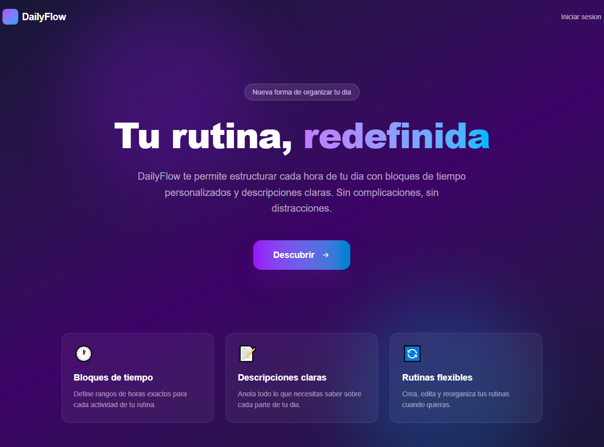

DailyFlow
Aplicación web para organizar rutinas diarias por día de la semana. Permite planificar bloques de tiempo con título, horario, descripción y color personalizado, con inicio de sesión mediante cuenta de Google.

Sobre el proyecto _
DailyFlow es una aplicación para organizar la semana de forma visual. Cada usuario tiene su propio tablero semanal donde puede añadir bloques de rutina — como "Gimnasio", "Estudio" o "Trabajo" — con horario de inicio y fin, descripción y un color identificativo.
El acceso se realiza mediante Google OAuth gracias a NextAuth, por lo que no es necesario registrarse con usuario y contraseña. Cada usuario solo ve y gestiona sus propias rutinas.
Funcionalidades _
-
Login con Google OAuth
Autenticación segura mediante NextAuth y Google Provider, sin gestión de contraseñas.
-
Planificación semanal
Vista organizada por días de la semana con todos los bloques de cada día.
-
Bloques personalizables
Crea bloques con título, horario, descripción y color para identificarlos visualmente.
-
Interfaz responsive
Diseño adaptado a móvil, tablet y escritorio con Tailwind CSS.
-
Datos privados por usuario
Cada cuenta solo accede a sus propias rutinas, protegidas por sesión.